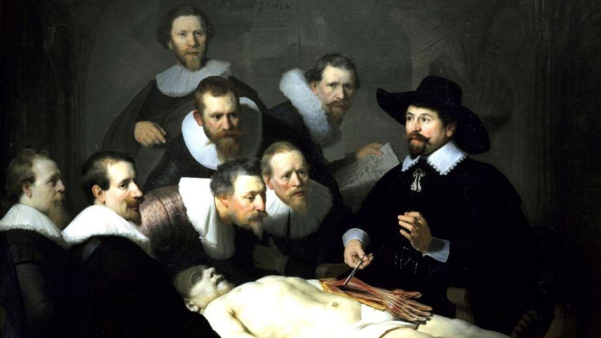

Cirurgias do Século 19
De 1870 a 1900, em total contraste com o crescimento astronômico da economia industrial americana, o aumento da pobreza, as preocupações corporativas com a influência política, a desigualdade social, o colapso mental e as taxas de suicídio vertiginosas foram chocantes. Para alguns estudiosos, a Idade Média foi uma era puramente suja e supersticiosa sobre como tratar as pessoas, enquanto a idade moderna foi responsável pelo desenvolvimento do pensamento científico, o que possibilitou alguns avanços. O século 19 foi considerado a "era do herói", que promoveu o desenvolvimento da medicina de uma vez por todas.
